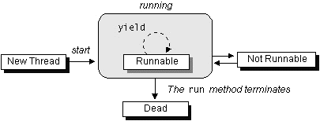

Feedback Form
| Start of Tutorial > Start of Trail > Start of Lesson | Search Feedback Form |
Now that you've seen how to give a thread something to do, we'll review some details that were glossed over in the previous section. In particular, we look at the life cycle of a thread: how to create and start a thread, some of the special things it can do while it's running, and how to stop it.The following diagram shows the states that a Java thread can be in during its life. It also illustrates which method calls cause a transition to another state. This figure is not a complete finite state diagram, but rather an overview of the more interesting and common facets of a thread's life. The remainder of this section uses the
Clockapplet previously introduced to discuss a thread's life cycle in terms of its state.

The application in which an applet is running calls the applet'sstartmethod when the user visits the applet's page. TheClockapplet creates aThread,clockThread, in itsstartwith the bold code shown here:After the bold statement has been executed,public void start() { if (clockThread == null) { clockThread = new Thread(this, "Clock"); clockThread.start(); } }clockThreadis in the New Thread state. When a thread is a New Thread, it is merely an emptyThreadobject; no system resources have been allocated for it yet. When a thread is in this state, you can only start the thread. Calling any method besides start when a thread is in this state makes no sense and causes anIllegalThreadStateException. (In fact, the runtime system throws anIllegalThreadStateExceptionany time a method is called on a thread and that thread's state does not allow for that method call.)Notice that
'this'-- theClockinstance -- is the first argument to the thread constructor. The first argument to the thread constructor must implement theRunnableinterface and provides the thread with itsrunmethod. The second argument is just a name for the thread.
Now consider the next line of code inClock'sstartmethod shown here in bold:Thepublic void start() { if (clockThread == null) { clockThread = new Thread(this, "Clock"); clockThread.start(); } }startmethod creates the system resources necessary to run the thread, schedules the thread to run, and calls the thread'srunmethod.clockThread'srunmethod is the one defined in theClockclass.After the
startmethod has returned, the thread is "running". Yet, it's somewhat more complex than that. As the previous figure shows, a thread that has been started is actually in the Runnable state. Many computers have a single processor, thus making it impossible to run all "running" threads at the same time. The Java runtime system must implement a scheduling scheme that shares the processor between all "running" threads. (See Understanding Thread Priority for more information about scheduling.) So at any given time, a "running" thread actually may be waiting for its turn in the CPU.Here's another look at
Clock'srunmethod:public void run() { Thread myThread = Thread.currentThread(); while (clockThread == myThread) { repaint(); try { Thread.sleep(1000); } catch (InterruptedException e){ // the VM doesn't want us to sleep anymore, // so get back to work } } }Clock'srunmethod loops while the conditionclockThread == myThreadistrue. This exit condition is explained in more detail in Stopping a Thread. However, for now, know that it allows the thread, and thus the applet, to exit gracefully.Within the loop, the applet repaints itself and then tells the thread to sleep for one second (1000 milliseconds). An applet's
repaintmethod ultimately calls the applet'spaintmethod, which does the actual update of the applet's display area. TheClockpaintmethod gets the current time, formats, and displays it:public void paint(Graphics g) { // get the time and convert it to a date Calendar cal = Calendar.getInstance(); Date date = cal.getTime(); // format it and display it DateFormat dateFormatter = DateFormat.getTimeInstance(); g.drawString(dateFormatter.format(date), 5, 10); }
A thread becomes Not Runnable when one of these events occurs:The
- Its
sleepmethod is invoked.- The thread calls the
waitmethod to wait for a specific condition to be satisifed.- The thread is blocking on I/O.
clockThreadin theClockapplet becomes Not Runnable when the run method callssleepon the current thread:During the second that thepublic void run() { Thread myThread = Thread.currentThread(); while (clockThread == myThread) { repaint(); try { Thread.sleep(1000); } catch (InterruptedException e){ // the VM doesn't want us to sleep anymore, // so get back to work } } }clockThreadis asleep, the thread does not run, even if the processor becomes available. After the second has elapsed, the thread becomes Runnable again and, if the processor becomes available, the thread begins running again.For each entrance into the Not Runnable state, there is a specific and distinct escape route that returns the thread to the Runnable state. An escape route works only for its corresponding entrance. For example, if a thread has been put to sleep, then the specified number of milliseconds must elapse before the thread becomes Runnable again. The following list describes the escape route for every entrance into the Not Runnable state:
- If a thread has been put to sleep, then the specified number of milliseconds must elapse.
- If a thread is waiting for a condition, then another object must notify the waiting thread of a change in condition by calling
notifyornotifyAll. More information is available in Synchronizing Threads.- If a thread is blocked on I/O, then the I/O must complete.
A program doesn't stop a thread like it stops an applet (by calling a method). Rather, a thread arranges for its own death by having arunmethod that terminates naturally. For example, thewhileloop in thisrunmethod is a finite loop-- it will iterate 100 times and then exit:A thread with thispublic void run() { int i = 0; while (i < 100) { i++; System.out.println("i = " + i); } }runmethod dies naturally when the loop completes and therunmethod exits.Let's look at how the
Clockapplet thread arranges for its own death. You might want to use this technique with your applets. RecallClock'srunmethod:The exit condition for thispublic void run() { Thread myThread = Thread.currentThread(); while (clockThread == myThread) { repaint(); try { Thread.sleep(1000); } catch (InterruptedException e){ // the VM doesn't want us to sleep anymore, // so get back to work } } }runmethod is the exit condition for thewhileloop because there is no code after thewhileloop:This condition indicates that the loop will exit when the currently exiting thread is not equal towhile (clockThread == myThread) {clockThread. When would this ever be the case?When you leave the page, the application in which the applet is running calls the applet's
stopmethod. This method then sets theclockThreadtonull, thereby telling the main loop in therunmethod to terminate:If you revisit the page, thepublic void stop() { // applets' stop method clockThread = null; }startmethod is called again and the clock starts up again with a new thread. Even if you stop and start the applet faster than one iteration of the loop,clockThreadwill be a different thread thanmyThreadand the loop will still terminate.
A final word about thread state: The API for theThreadclass includes a method calledisAlive. TheisAlivemethod returns true if the thread has been started and not stopped. If theisAlivemethod returns false, you know that the thread either is a New Thread or is Dead. If theisAlivemethod returns true, you know that the thread is either Runnable or Not Runnable. You cannot differentiate between a New Thread or a Dead thread. Nor can you differentiate between a Runnable thread and a Not Runnable thread.
| Start of Tutorial > Start of Trail > Start of Lesson | Search Feedback Form |